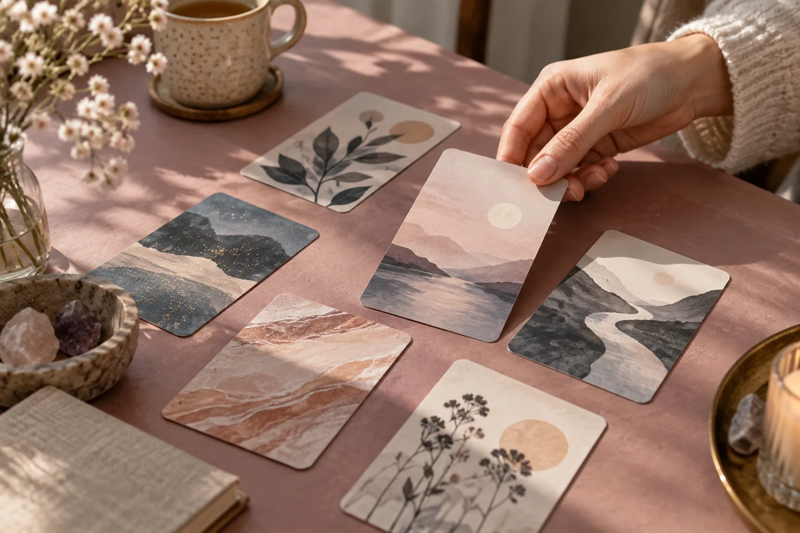
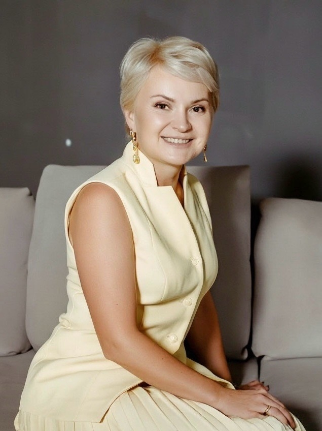

Хочется лучше понять свои чувства и потребности.
Время услышать себя
Не знаешь, чего хочешь? Спроси себя.
МАК-сессия — пространство, где можно остановиться, посмотреть на свой вопрос под новым углом и найти больше ясности.
Хочу разбор
Твоя история важна ♡
Когда это может помочь
Если внутри много вопросов
Не обязательно заранее знать точную формулировку. Можно начать с того, что сейчас волнует.
Трудно принять решение и услышать, что важно именно тебе.
Нужна пауза, чтобы разобраться в себе и увидеть следующий шаг.
Без загадок и предсказаний
Как проходит МАК-сессия
Карты дают образы для разговора. Смысл этим образам придаёшь ты: через свои ассоциации и ответы на вопросы.
01
Разбираемся, с чем пришла
Не нужно заранее знать, как правильно сформулировать проблему. Приходи с тем, что крутится в голове: «не знаю, куда двигаться», «хочу перемен», «запуталась».
02
Смотрим через карты
Ты выбираешь образы, которые откликаются именно тебе, я задаю вопросы и помогаю заметить то, что обычно остаётся между строк.
03
Находим свой следующий шаг
Без готовых советов и «тебе надо вот так». Собираем то, что стало понятнее после сессии, и смотрим, куда двигаться дальше.
О чём эта встреча
Больше ясности.
Больше тебя.
Больше возможностей.

МАК-консультант
Помогаю разобраться, когда непонятно, куда дальше
Привет, я Лена. 15 лет я работаю в подборе людей и знаю, как легко потеряться между «надо», «правильно» и «а вдруг».
Сейчас я провожу МАК-сессии для женщин, которые запутались, хотят перемен или просто устали жить на автомате. МАК помогает посмотреть на привычную историю под другим углом и услышать то, что внутри уже давно просится быть замеченным.
Здесь не нужно быть правильной. Просто приходи такой, какая ты есть.
Пакеты
Не знаете, с чего начать?
Выберите формат, который ближе к вашей ситуации.
А если сомневаетесь — напишите «Хочу разбор», и я помогу выбрать.
Пакет 01
3 000 ₽Один вопрос — один шаг
Когда есть конкретный вопрос, который не отпускает.
1 сессия · 90 минут · онлайн · MACROOM
Разбираем один запрос через МАК, смотрим на ситуацию под другим углом и определяем следующий шаг.
Подойдёт, если нужно:
- принять решение;
- выбрать между вариантами;
- разобраться в одной ситуации.
Пакет 02
5 000 ₽Два шага к решению
Когда хочется не только разобраться, но и попробовать изменить ситуацию.
2 сессии по 90 минут · онлайн · MACROOM
Между встречами — короткая практика. После второй встречи — итоговый документ с выводами и следующими шагами.
Выбрать этот форматПакет 03
8 000 ₽Карьера без паники
Когда вопрос связан с работой, карьерой или поиском нового направления.
3 сессии по 90 минут · онлайн · MACROOM
МАК + HR-инструменты:
- разбор карьерного запроса;
- анализ резюме;
- самопрезентация;
- подготовка к собеседованию;
- рекомендации по позиционированию.
Флагманский формат
10 000 ₽Месяц ясности
Когда хочется не одной встречи, а пройти путь последовательно — от вопроса к понятному плану.
4 сессии по 90 минут · онлайн · MACROOM
В течение месяца:
- еженедельные встречи;
- мини-практики между сессиями;
- чек-листы;
- итоговый набор опор;
- план следующих шагов.
Начнём со знакомства
Как записаться на МАК-сессию
Не обязательно заранее выбирать пакет. Сначала коротко расскажите о своём вопросе — я помогу подобрать формат сессии, который лучше подойдёт именно вашей ситуации.
Нажмите «Выбрать этот формат»
Кнопка в карточке пакета откроет страницу ВКонтакте, где можно перейти к личному сообщению.
Опишите свой вопрос
Напишите, что сейчас беспокоит, что хочется прояснить и какого результата вы ждёте от встречи. Идеальная формулировка не нужна.
Подберём формат
Я задам несколько уточняющих вопросов и предложу наиболее подходящий формат: одну встречу, цикл сессий или карьерный разбор.
Согласуем встречу
После выбора формата договоримся о дате и времени. Перед встречей я пришлю ссылку на MACROOM.
Частые вопросы
Перед первой встречей
Что такое МАК-сессия?
Это разговор с помощью метафорических ассоциативных карт. Ты выбираешь образы, которые откликаются тебе, а через вопросы и обсуждение мы разбираемся в твоей ситуации.
А если я не знаю, с чем прийти?
Это нормально. Не нужно заранее придумывать правильный запрос. Можно прийти с ощущением «я запуталась», «хочу перемен» или просто «не понимаю, что дальше».
Нужно ли уметь работать с картами?
Нет. Никаких правил или значений знать не нужно. Ты просто выбираешь образы, которые откликаются, а я помогаю вопросами и вниманием. Это не про «угадать правильный смысл», а про то, чтобы заметить то, что раньше ускользало.
Нужна ли глубокая формулировка запроса?
Нет. Достаточно одной фразы про себя, например: «я устала», «хочу понять, чего хочу» или просто «мне тревожно».
А если я ничего не почувствую?
Ничего специально чувствовать не нужно. Сессия не про «правильные чувства», а про твой темп. Даже если кажется, что внутри тихо, образы всё равно могут отозваться мыслью, воспоминанием или просто ощущением «мне спокойно». А если и этого нет — это тоже ответ. Значит, сейчас важно бережное присутствие, а не быстрые открытия. И это нормально: мы не подгоняем процесс.
Помогу выбрать
Не знаете, какой пакет выбрать?
Напишите «Хочу разбор». Я задам несколько вопросов и помогу подобрать формат под вашу ситуацию. Иногда достаточно одной сессии, а иногда лучше пройти путь последовательно.
Хочу разборОткроется страница ВКонтакте. Напишите в сообщении: «Хочу разбор».